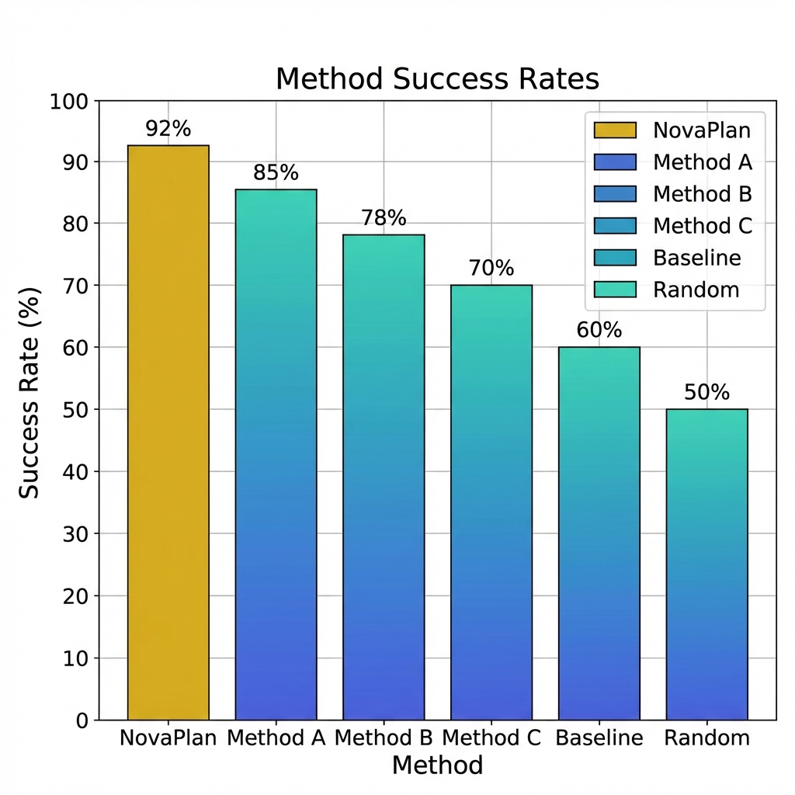

This is your project abstract. Replace this text with a concise summary of your research, the problems you solved, and the key contributions of your work.
3D Point Cloud & Actionable Flow from Generated Video
Note: The visualized end-effector is offset from the physical one due to longer gripper fingers used in real-world experiments.
Initial Observation
Generated Video
Execution Video (1x speed)
Methodology Overview: Describe your method here. Mention the key stages of your pipeline, such as data processing, model architecture, or execution strategy.

Example Experiment: Describe the experiment setup, the goal, and the observed results.

Experiment Results: Replace this image with your results plot (e.g., success rates, performance metrics). Briefly describe your findings here.
Failure Modes: Analyze where your method currently fails. This provides valuable insights for future improvements.